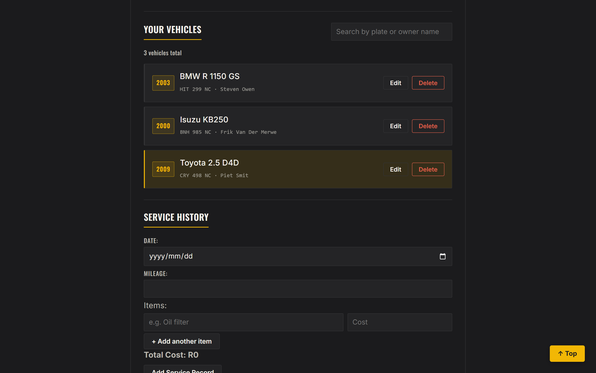

In real-world use
ShopLog
A vehicle service tracker I built for a friend's mechanic workshop, which now uses it for real jobs. Mechanics log each vehicle and every service done on it, with itemised costs that total automatically.
- Instant search by number plate or owner name, so a customer's history is a few keystrokes away
- Each user's data is private, enforced by Firestore security rules I tested in the Rules Playground
- Installable PWA, so it runs from a phone's home screen like a native app